In working with the Linux terminal, it is likely that you will need to create files.
This can be accomplished in multiple ways (some more of which will be discussed later), but perhaps the most straightforward way is to use the touch command.
This command is used to update the modification date of a file in a directory, or to create a file with the given name if it does not already exist.
Below an example of a file created with the touch command is given in the screenshot:
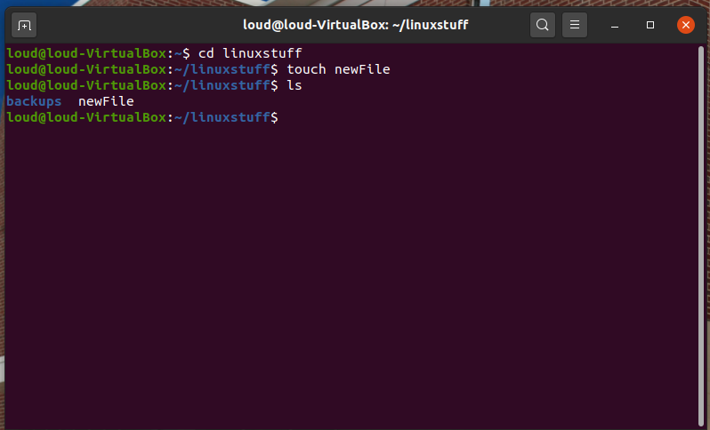
Linux supports the use of all sorts of different text editors, but this tutorial will focus on the VIM text editor.
It was designed as an improvement to the vi (visual) editor (vim = vi improved), and can be used in the terminal.
See the screenshot below for an example of its use:
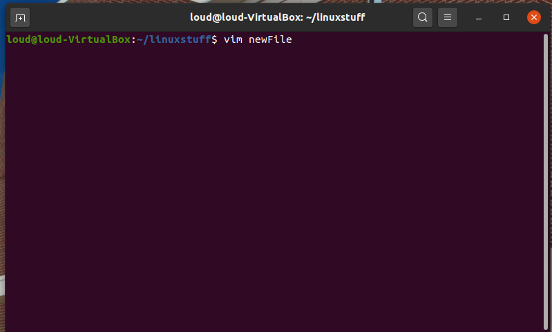
Upon running the above command, you will see an interface that looks like the screenshot below:
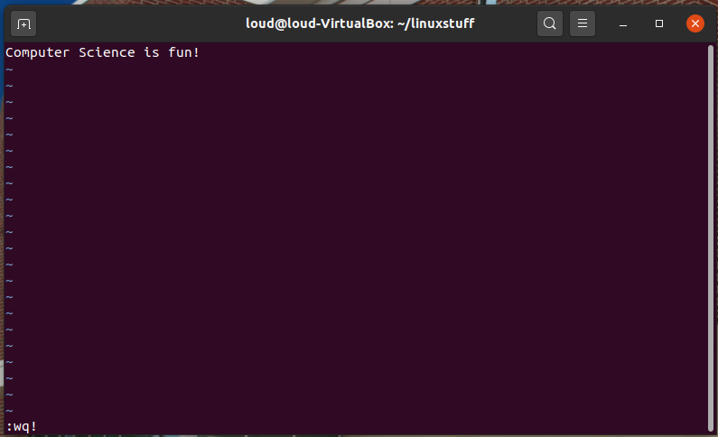
In order to write to the file you have opened in the editor, press the [i] key on the keyboard. You should see "INSERT" appear at bottom of the terminal.
When you have finished writing to the file, press the [esc] key to exit INSERT mode. Then press the colon [:] key, the [w] key (for write/save), the [q] key (to quit), and exclamation point [!], followed by the [enter] key to exit the file, saving all the changes.
The vim text editor offers several other features, and you are encouraged to explore the features on your own.
Seen below is the creation of a new file called longFile containing the numbers 1-50. This file will be used later in the tutorial.
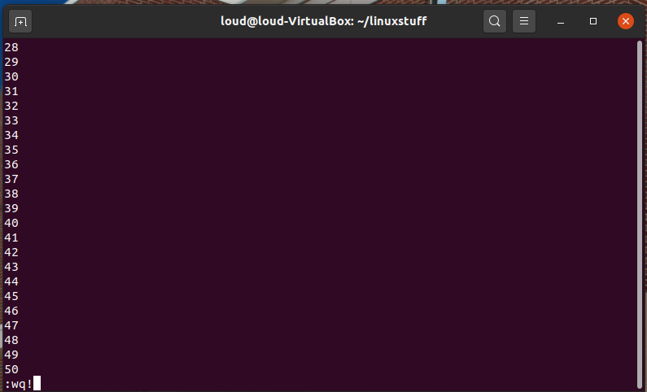
Before you start the next section, you may like to clear the terminal window of the previous commands so the output of the following commands can be clearly understood.
At the prompt, type
$ clear
This will clear all text and leave you with the $ prompt at the top of the window.
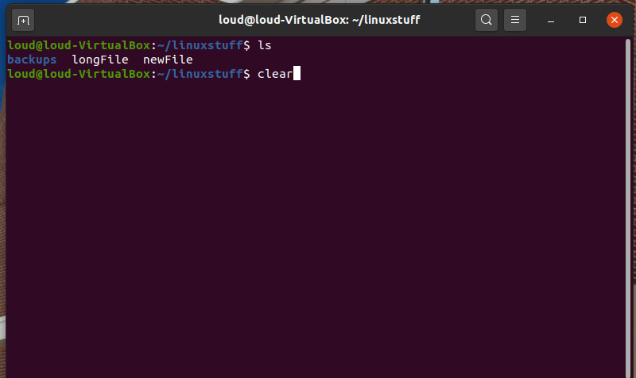
The command cat can be used to display the contents of a file on the screen. Type:
$ cat newFile
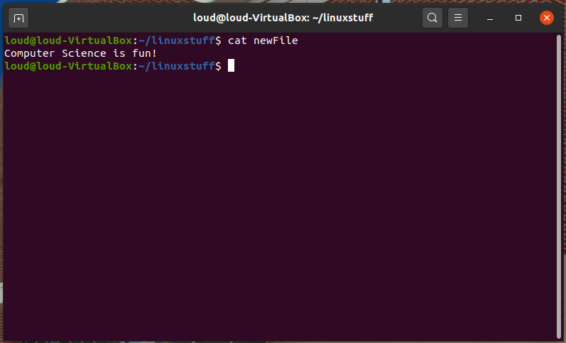
As you can see, the message that was written to the file with the vim editor is now being displayed to the terminal.
The command less writes the contents of a file onto the screen a page at a time. Type
$ less longFile
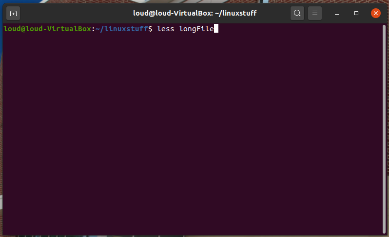
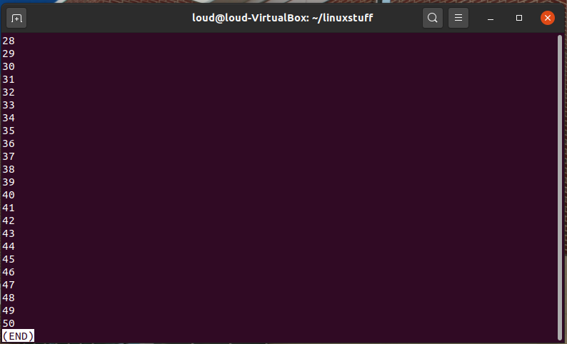
Press the [space-bar] if you want to see another page, and type [q] if you want to quit reading. As you can see, less is used in preference to cat for longer files.
The head command writes the first ten lines of a file to the screen.
First clear the screen then type
$ head longFile
Then type
$ head -5 longFile
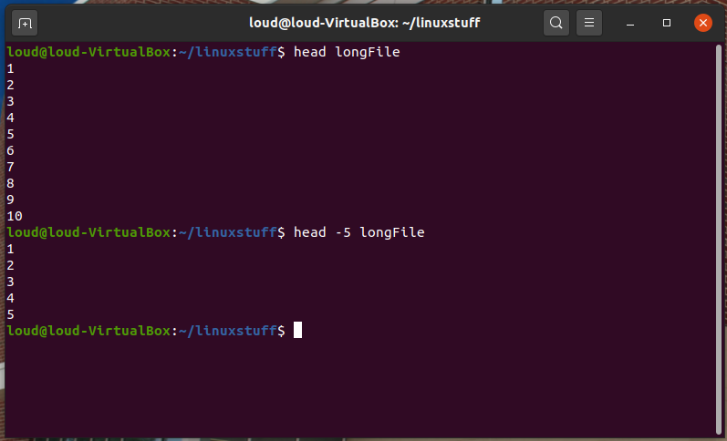
What difference did the -5 do to the head command?
The tail command writes the last ten lines of a file to the screen.
Clear the screen and type
$ tail longFile
A tag with a number can be used here just as it was with the head command, try it out!
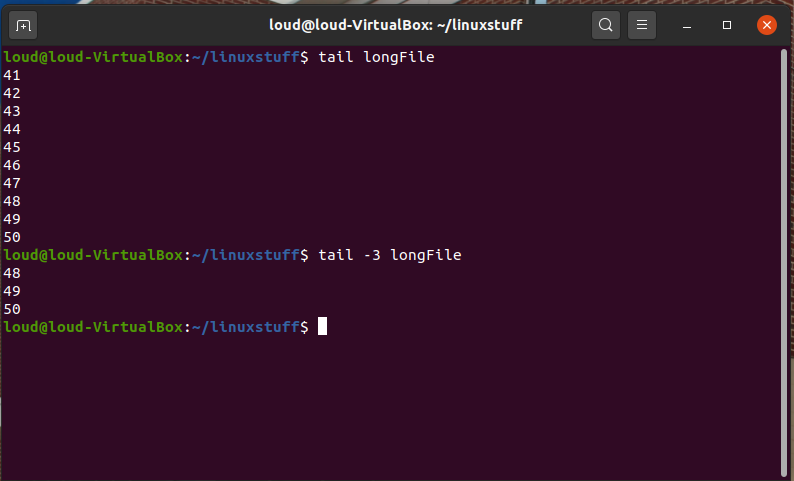
cp file1 file2 is the command which makes a copy of file1 in the current working directory and calls it file2
What we are going to do now is create a copy of the file newFile which we made with the touch command
First, cd to your linuxstuff directory.
$ cd ~/linuxstuff
Then at the Linux prompt, type,
$ cp newFile copyFile
The above command means copy the file newFile to a new file called copyFile
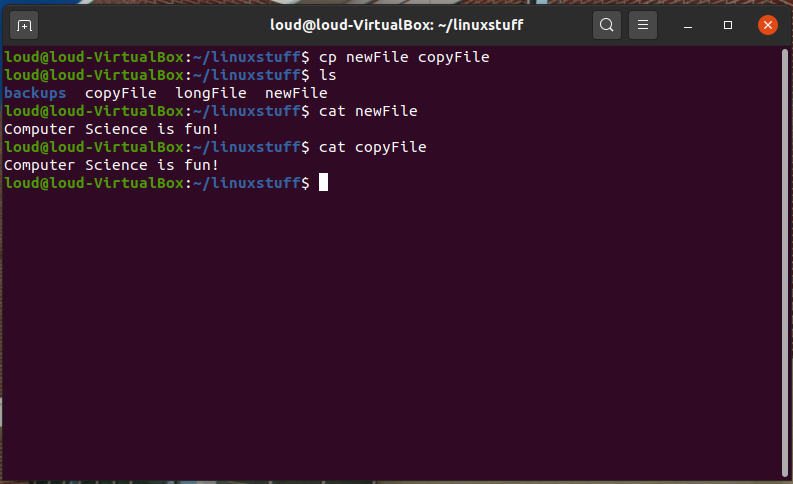
mv file1 file2 moves (or renames) file1 to file2
To move a file from one place to another, use the mv command. This has the effect of moving rather than copying the file, so you end up with only one file rather than two.
It can also be used to rename a file, by moving the file to the same directory, but giving it a different name.
We are now going to move the file copyFile to your backups directory.
First, change directories to your linuxstuff directory (can you remember how?). Then, inside the linuxstuff directory, type
$ mv copyFile backups
View the contents of the linuxstuff and backups directories to confirm that the command worked.
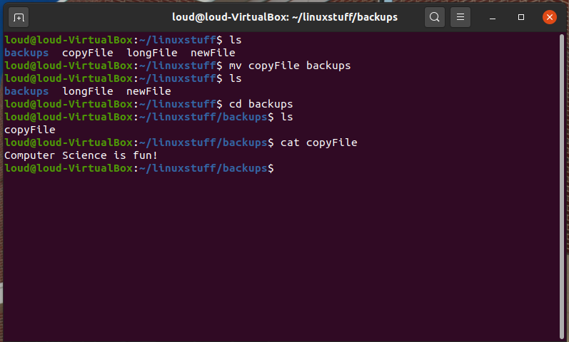
To delete (remove) a file, use the rm command. As an example, we are going to delete the original file we created, newFile.
Inside your linuxstuff directory, type
$ ls
$ rm newFile
$ ls
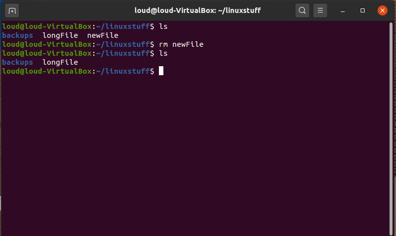
You can use the rmdir command to remove a directory (make sure it is empty first).
Try to remove the backups directory. You will not be able to since Linux will not let you remove a non-empty directory.
In order to delete backups, navigate into it and delete copyFile, which is located there. Then return to linuxstuff and try rmdir again.
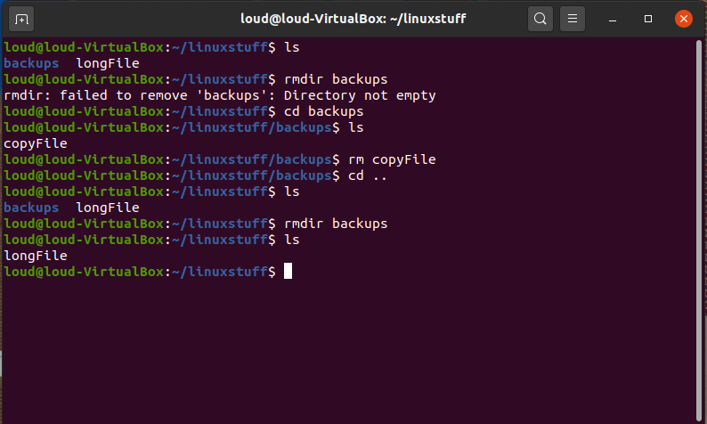
Using less, you can search though a text file for a keyword (pattern). For example, to search through longFile for the word lines containing the number 3, type
$ less longFile
then, still in less, type a forward slash [/] followed by the word (or in this case, number) to search
/3
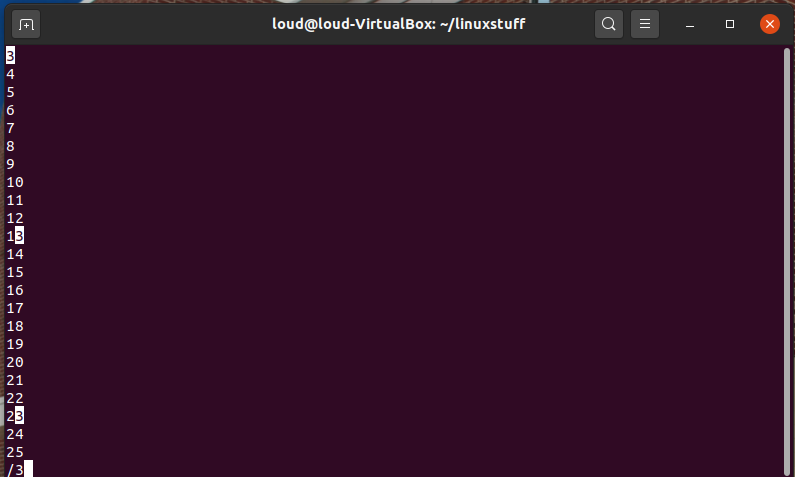
As you can see, less finds and highlights the keyword (3). Type [n] to search for the next occurrence of the number.
Naturally, this search function works on any words as well, similar to a keystroke you may be familiar with, CTRL+F.
grep is one of many standard Linux utilities. It searches files for specified words or patterns. First clear the screen, then type
$ grep 4 longFile
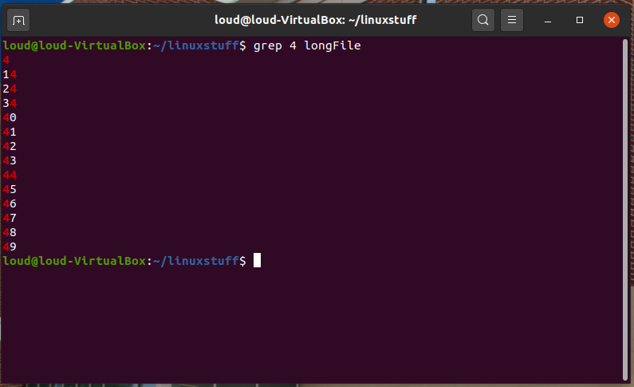
As you can see, grep has printed out each line containg the number 4.
While grep works just as well on words, keep in mind that it is case sensitive; it distinguishes between upper and lower case characters.
To ignore upper/lower case distinctions, use the -i option, i.e. type
$ grep -i word fileName
To search for a phrase or pattern, you must enclose it in single quotes (the apostrophe symbol). For example to search for spinning top, type
$ grep -i 'spinning top' fileName
Some of the other options of grep are:
-v display those lines that do NOT match
-n precede each matching line with the line number
-c print only the total count of matched lines
Try some of them and see the different results. Don't forget, you can use more than one option at a time. See below screenshots for some examples:
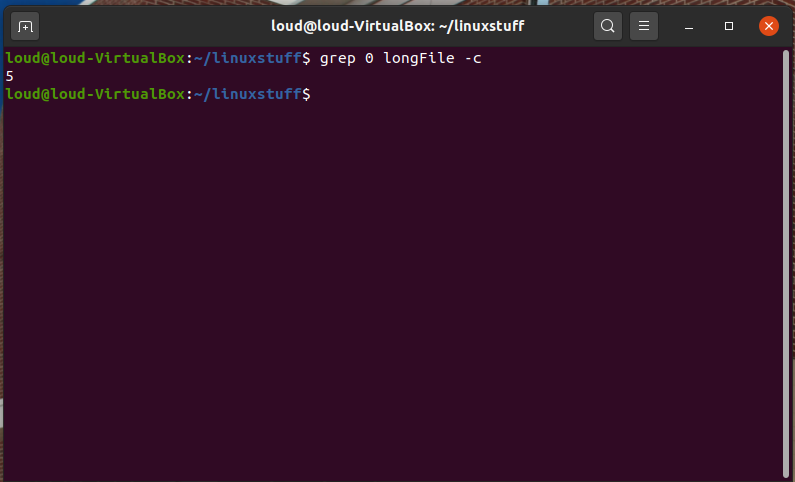
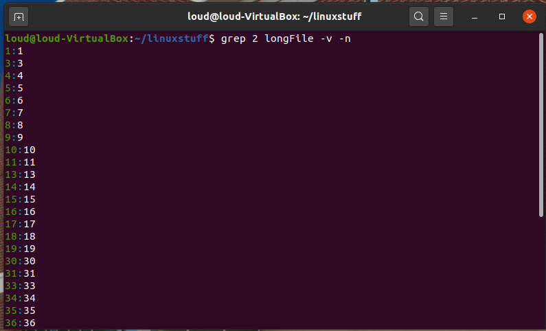
A handy little utility is the wc command, short for word count. To do a word count on longFile, type
$ wc -w longFile
To find out how many lines the file has, type
$ wc -l longFile
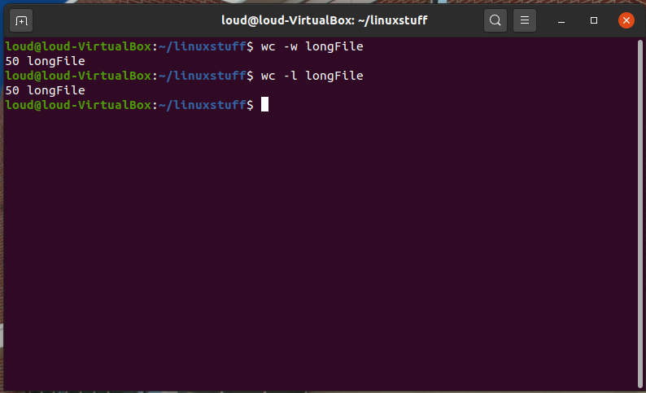
| Command | Meaning |
|---|---|
| touch file | update modification date of/create file |
| vim file | edit file using vim text editor |
| cat file | display a file |
| less file | display a file a page at a time |
| head file | display the first few lines of a file |
| tail file | display the last few lines of a file |
| cp file1 file2 | copy file1 and call it file2 |
| mv file1 file2 | move or rename file1 to file2 |
| rm file | remove a file |
| rmdir directory | remove a directory |
| grep 'keyword' file | search a file for keywords |
| wc file | count number of lines/words/characters in file |
Modified from original site made by M.Stonebank@surrey.ac.uk, © 9th October 2000